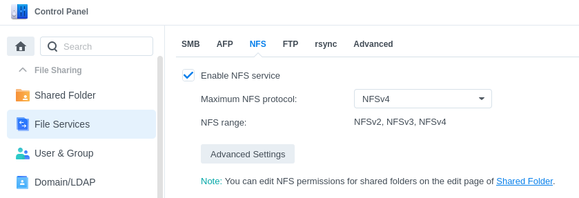
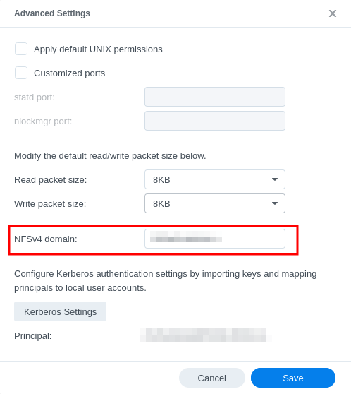
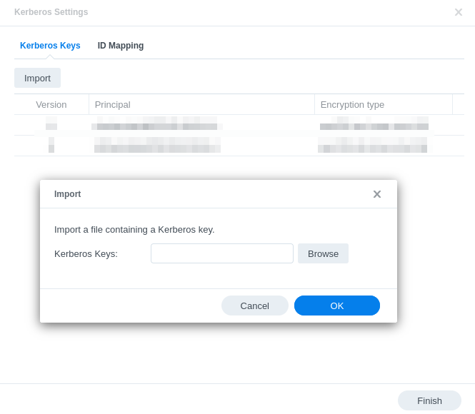
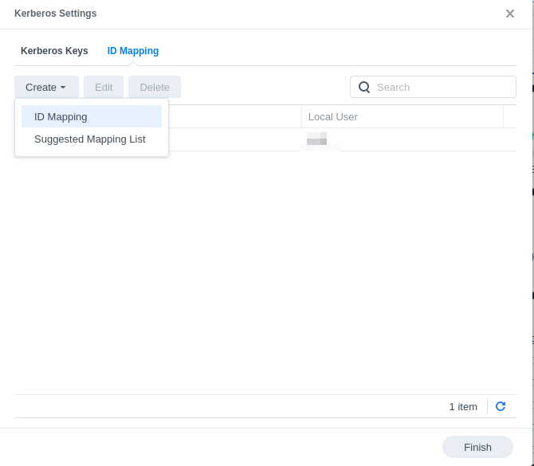
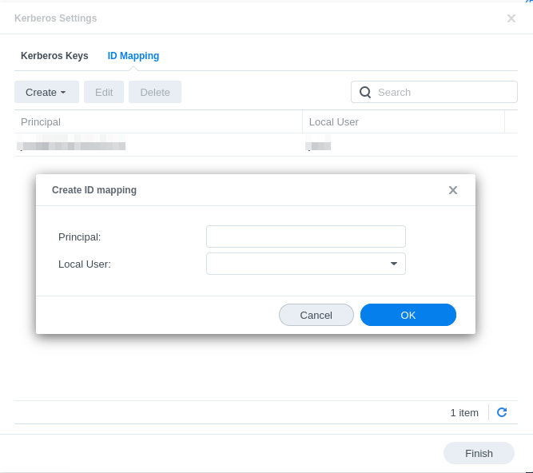
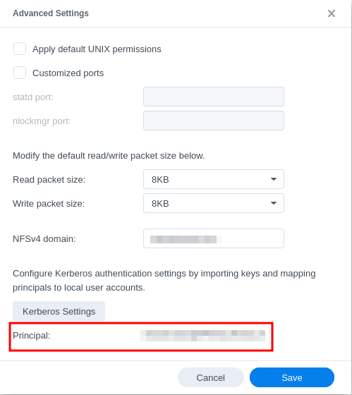
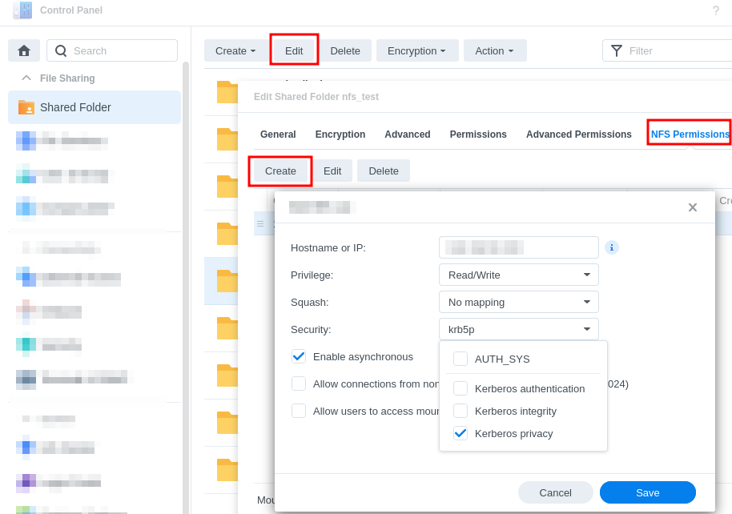

Synology NAS | NFSv4 | Kerberos | Linux Client
Posted by Jordi Warmenhoven in Blog
Many people have a Network Attached Storage (NAS) server in their home networks to share files and perhaps function as a private cloud. These NAS servers usually offer different ways (protocols) to share files with devices on the network. Most common protocols are:
The SMB protocol is the standard in Windows networks, whereas NFS is used more in Unix/Linux environments. I have a Synology NAS and have both Linux and Microsoft Windows clients connecting to the fileserver.
SMB works fine on Linux too, but there are a number of advantages in using NFS which I will not detail here. However, certain steps in NFS configuration are especially important to make file permissions work properly/securely with version 4 of the NFS protocol. This has to do with how user accounts on the NAS are mapped and authorized to the user accounts on the Linux client. A quick and dirty setup on the Synology NAS is possible: mapping all connecting NFS clients to a guest account on the NAS. As a consequence, owners of the files created on the NFS share are mapped to user nobody. With this setup I ran into issues with using git on the NFS fileshares since my Linux user was not the owner of the local repository files.
Below I describe how I configured NFSv4 + Kerberos on the Synology NAS and my Linux client in order to work properly with regards to file ownership and permissions. This is by no means an exhaustive description and assumes some prior knowledge on the subjects, but hopefully it gives some form of guidance.
System environment:
- NFS Server: Synology DS216+ NAS running DSM 7.1.1-42962 Update 6
- NFSv4 (4.0)
- NFS Client: Manjaro Linux running a 6.3 kernel
- Running Kerberos KDC (Kerberos Distribution Center). In larger networks the KDC would typically run on a separate server. (Kerberos 5 v1.19.4)
- Mounting the NFSv4 share on the Synology NAS.
- No DNS on local network
Kerberos
NSFv4 clients are authenticated on user level. This can be done using standard UNIX authentication (AUTH_SYS), but then user accounts on client and NAS need to match on UID/GID level as I understand it. The other authentication method uses Kerberos. Understanding how Kerberos works (high level) takes some time. It is typically one of those things where you will need to read documentation, try things out, re-read documentation and try some more.
Here are a number of resources which I found useful:
-
Tutorial (kerberos.org)
I suggest to start here. -
Official Documentation (web.mit.edu)
This is a collection of separate HTML pages. I found the single pdf file contained in the releases easier to navigate. -
Kerberos on Arch Wiki
I run a Manjaro Linux Distribution, which is based on Arch Linux. -
Kerberos Tutorial Debian/Ubuntu
Not all parts are applicable to Manjaro (and perhaps not anymore to Debian either?), but still very informative. -
Generate Kerberos tickets at login using PAM.
-
Linux man files on the various config files, programs and protocols.
NFS Client
-
Enable NFS client services:
$sudo systemctl enable nfs-client.target
The Synology documentation mentions that idmapd needs to be enabled. However, I noticed that the Linux idmapd manual says that only NFSv4 servers need to have that daemon running. The client on newer Linux kernels now uses the nfsidmap program to do name mapping. No need to enable idmapd. However, you do need to set the NFSv4 domain identical to the Kerberos Realm in/etc/idmapd.conf. This config file is used by other programs as well according to the manual page. -
Configure
/etc/hosts
The hostname of the client (and KDC) must be mapped to the LAN ip address, not the 127.* address.
The hostname of the service/server (NAS) must be mapped to the LAN ip address (unless you have DNS running). -
Maintain Kerberos configuration in
/etc/krb5.conf- Section
[libdefaults]: set yourdefault_realmto a name you want to use for your Kerberos realm. Convention is to use the DNS domain in capital letters, but if you do not use DNS in your local network you can of course pick something else. - Section
[realms]: map theadmin_serverandkdcfor your realm to the ip address/FQDN of your linux client. - Section
[domain_realm]: map the domain to your realm.
- Section
-
Add an administrator user to the Kerberos Access Control List
/var/lib/krb5kdc/kadm5.acl
See documentation/resources mentioned above regarding the format of this file. -
Configure Kerberos database
- After initial creation of the database, use
$sudo kadmin_localto add the administrator principal to the database. After having added this principal, you can from now on use$kadminwhich interacts with the database via the kadmind daemon. - Add a standard principal that is your user on the Linux client.
- Add a service principal for the NAS/NFSv4 server.
- Add a service principal for the KDC (the Linux client).
Restart krb5-kdc and krb5-kadmind services.
$sudo systemctl restart krb5-kdc. c$sudo systemctl restart krb5-kadmind.
- After initial creation of the database, use
-
Export the principal key for the server to the
/etc/krb5.keytabfile using$kadmin.
Every time you generate a new entry for a principal to the KDC database, a key-version-number (kvno) is incremented. -
Prepare a mount point for the NFSv4 share.
Add an entry in the/etc/fstabfile (type nfs). It is not necessary to indicate any NFS version or other options, defaults will do. -
Configure PAM to automatically generate a Kerberos TGT ticket at login.
When you have a Kerberos KDC running with the relevant principals you can use$kinitto generate a TGT ticket. When you try to access the NFS fileshare, a service ticket is automatically generated which grants you this access. In order to have the first step done in the background as well, you need to configure the Pluggable Authentication Modules (PAM). These modules take care of all authentication in Linux. There is a pam-krb5 module that you can install allowing you to enable Kerberos authentication with PAM. This post describes a way how to do that in a pragmatic way. It relies on having both a local login and a Kerberos login with identical passwords, but for me this is fine.
NFS Server
-
Enable the NFSv4 service in the NAS.

-
Enter NFSv4 domain/realm under 'Advanced Settings'. No need to change anything regarding the size of the read/write packages. These are negotiated between server and client automatically.

- Import the
/etc/krbd5.keytabfile from the linux client. In this setup, it should only contain the keys for the service principal we are interested in, the NAS.

- Map the principal ID from Kerberos database to a local user on the NAS.


- Now the server's Kerberos principal identifier will show on the first screen of the 'Advanced Settings'.

- Create NFS permission rule for the file share you want to connect to with the Linux client.
- Enter IP address of the Linux client.
- Read/write privilege
- Do not enable any static mapping here.
- Security: choose one of the Kerberos authentication methods.
- Kerberos authentication: krb5 - Authentication only.
- Kerberos integrity: krb5i - Authentication and Integrity Checking.
- Kerberos privacy: krb5p - Authentication, Integrity Checking and Traffic Encryption

After all has been set up and services restarted, you can try to mount the NFSv4 file share on the NAS. You can check the status of the mount using $findmnt -t nfs4
It will show you the details on the NFSv4 file share.
You should now have an NFSv4 share mounted in Linux with authentican handled by Kerberos.
Comments